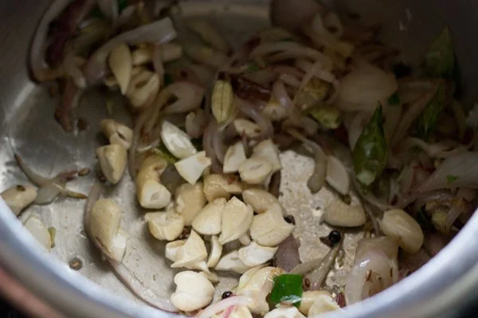

Coconut Milk Pulao

Ingredients:
- Basmati Rice
- 1 medium-large sized onion
- Crushed 1 inch ginger
- 2-3 garlic cloves
- 1 green chilli
Saut'e Spices, Aromatics
- 3 to 4 cloves
- 3 to 4 green cardamoms
- 1 inch cinnamon
- 1 single strand of mace
Prep Work
- Rinse 1 cup basmati rice or 200 grams basmati rice very well in water, till the water runs clear of the starch.
- When the rice is soaking, prep the vegetables by chopping them. Slice 1 medium to large onion thinly (1 cup thinly sliced onions). Crush 1 inch ginger, 2 to 3 garlic cloves and 1 green chili (about 1 teaspoon chopped green chillies) in a mortar-pestle.
- Now add the sliced onions and 5 to 6 curry leaves. If you do not have curry leaves, then add 1 medium sized tej patta (Indian bay leaf) when you fry the whole spices in step 3 above.
- Stir and mix very well.
- Sauté stirring often on low to medium-low heat till the onions turn light golden or are translucent.
- Then add the crushed ginger-garlic-green chili paste. Stir and sauté for about 10 to 12 seconds or till the raw aroma of ginger and garlic goes away.
- Then add the crushed ginger-garlic-green chili paste. Stir and sauté for about 10 to 12 seconds or till the raw aroma of ginger and garlic goes away.
- Stir and mix again
- Now add the mixed vegetables. You can add ¾ to 1 cup of any mixed vegetables, either fresh or frozen. I added ½ cup green peas and ⅓ cup chopped french beans.
- Stir and sauté the vegetables for a minute.
- Then add the soaked basmati rice.
- Gently mix and stir the basmati rice with the rest of the ingredients.
- Now pour ¾ cup of thick coconut milk. You can also add 1 cup thick coconut milk. Here I have used canned coconut milk, but you can use first extract of homemade coconut milk.
- Add 1 to 1.25 cups water. If using 1 cup of coconut milk, then add 0.75 to 1 cup water.
- . Stir well. Then season with salt as required. Taste the stock, it should feel slightly salty.
- When the pressure settles down naturally in the cooker, open the lid and gently fluff the rice.
- Garnish with some chopped coriander or mint leaves. Serve Coconut Milk Rice with salad, raita, pickle or a shorba gravy.

Soak the rice in sufficient water for 20 minutes. After 20 minutes, drain all the water and set the soaked rice aside.
Fry the spices on low heat till they splutter and are fragrant.



Add Veggies, Rice, Coconut Milk


Remember to add the correct amount of liquids depending on the quality and type of rice you are using. For 1 cup of basmati rice, you need to add about 1.75 to 2 cups of the liquids.

Cook Coconut Milk Rice
Cover and pressure cook Coconut Milk Rice for 1 to 2 whistles or for 8 to 9 minutes on medium to medium-high heat. I pressure cooked for 2 whistles.